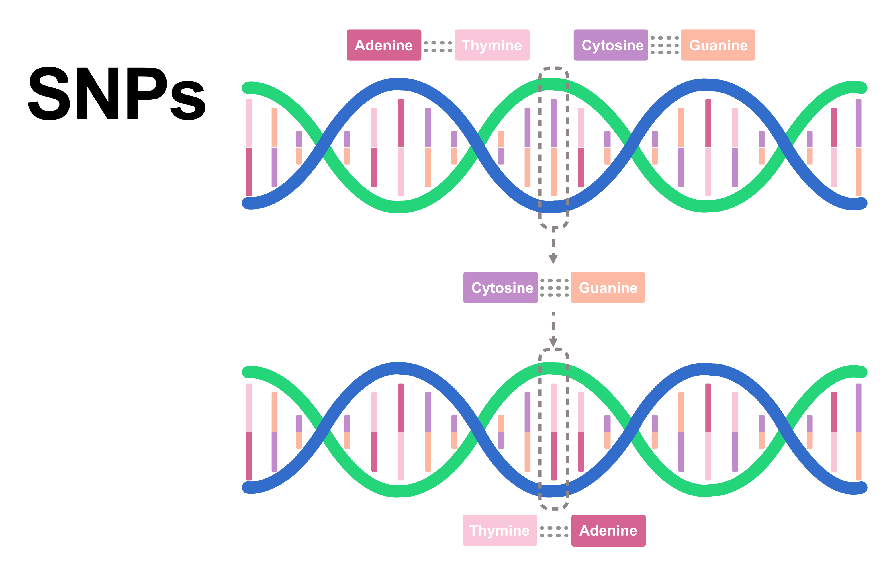

Variant calling genom bakteri dengan GATK
Variant calling genom bakteri dengan GATK

Daftar isi
- Variant calling: Langkah awal memperoleh informasi genetik individu berkualitas baik
- Persiapan lingkungan analisis
- Persiapan dataset
- Kendali mutu reads
- Alignment ke genom referensi
- Menandai duplikat
- Variant calling dengan GATK HaplotypeCaller
- Memisahkan dan memfilter varian
- Membaca hasil dan keterbatasan
- Penutup
Variant calling: Langkah awal memperoleh informasi genetik individu berkualitas baik
Program pemuliaan bertujuan untuk menghasilkan individu dengan kualitas genetik unggul, seperti individu dengan kualitas daging yang lebih baik atau individu dengan tingkat ketahanan penyakit yang tinggi dibandingkan dengan individu lainnya pada suatu populasi. Pada dasarnya, pemuliaan memanfaatkan variasi genetik alami yang telah ada di dalam sebuah populasi. Sebagai contoh, jika individu dengan kualitas daging grade A diketahui memiliki variasi genetik spesifik berupa alel ATC pada kromosom 8, pendekatan genomik dapat digunakan untuk mengidentifikasi individu mana saja yang membawa alel tersebut. Individu yang teridentifikasi kemudian dipilih sebagai calon indukan untuk generasi berikutnya.
Single Nucleotide Polymorphisms (SNP) merupakan marka genetik yang paling umum digunakan untuk menentukan varian mana yang berperan penting dalam proses pemuliaan. Di sinilah proses variant calling menjadi sangat penting. Variant calling berfungsi untuk mengidentifikasi dan mengisolasi SNP dalam suatu populasi berdasarkan hasil sekuensing genom dari banyak individu. Secara teknis, variant calling bekerja dengan menjajarkan (aligning) reads dari berbagai sampel terhadap genom referensi, lalu mengevaluasi apakah perbedaan basa pada posisi tertentu cukup signifikan untuk dikategorikan sebagai varian SNP yang sah.
Berbagai algoritma dan tools telah dikembangkan untuk melakukan variant calling, salah satunya adalah GATK HaplotypeCaller. Tool ini bekerja dengan merekonstruksi haplotype secara de novo pada daerah-daerah yang terindikasi memiliki variasi (active region). Melalui algoritma grafik perakitan (assembly graph), GATK HaplotypeCaller menghitung probabilitas alel dari setiap sampel dan menentukan varian yang paling memungkinkan. Proses ini menghasilkan berkas berformat Variant Call Format (VCF) yang siap digunakan sebagai data input genotipe dalam program pemuliaan berbasis genomik (genomic selection).
Pada tutorial ini, kita akan menggunakan Short Read Archive (SRA) dari bakteri Escherichia coli sebagai dataset latihan. Penggunaan data E. coli dilakukan untuk menghemat kapasitas penyimpanan dan meningkatkan efisiensi waktu komputasi, tanpa mengurangi pemahaman mendasar mengenai alur kerja (pipeline) variant calling menggunakan GATK.
Persiapan lingkungan analisis
Buka Terminal di VS Code lalu buat proyek.
mkdir -p ~/projects/gatk_snp_training/{raw/sra,raw/fastq,ref,aligned,variants,qc,tmp,logs,scripts}
cd ~/projects/gatk_snp_trainingOutput:
(gatk-snp) [aguswibowo@bun148 gatk_snp_training]$ ls
aligned logs qc raw ref scripts tmp variantsInstalasi tools
Menggunakan Anconda, aktifkan solver:
conda config --set solver libmambaBuat environment:
conda create -n gatk-snp \
-c conda-forge -c bioconda \
openjdk=17 gatk4 bwa samtools sra-tools \
fastqc multiqc bcftools seqkit pigz \
ncbi-datasets-cli r-vcfr r-tidyverse \
-yAktifkan gatk-snp:
conda activate gatk-snpCek hasil instalasi:
gatk --version
java -version
bwa 2>&1 | head -n 1
samtools --version | head -n 1
prefetch --version
datasets versionOutput:
(gatk-snp) [aguswibowo@bun148 gatk_snp_training]$ gatk --version
java -version
bwa 2>&1 | head -n 1
samtools --version | head -n 1
prefetch --version
datasets version
Using GATK jar /home/aguswibowo/anaconda3/envs/gatk-snp/share/gatk4-4.6.2.0-1/gatk-package-4.6.2.0-local.jar
Running:
java -Dsamjdk.use_async_io_read_samtools=false -Dsamjdk.use_async_io_write_samtools=true -Dsamjdk.use_async_io_write_tribble=false -Dsamjdk.compression_level=2 -jar /home/aguswibowo/anaconda3/envs/gatk-snp/share/gatk4-4.6.2.0-1/gatk-package-4.6.2.0-local.jar --version
The Genome Analysis Toolkit (GATK) v4.6.2.0
HTSJDK Version: 4.2.0
Picard Version: 3.4.0
openjdk version "17.0.18-internal" 2026-01-20
OpenJDK Runtime Environment (build 17.0.18-internal+0-adhoc.rattler.src)
OpenJDK 64-Bit Server VM (build 17.0.18-internal+0-adhoc.rattler.src, mixed mode, sharing)
samtools 1.24
prefetch : 3.4.1
datasets version: 18.37.0
(gatk-snp) [aguswibowo@bun148 gatk_snp_training]$Persiapan dataset
Untuk latihan, kita akan menggunakan data sangat kecil. Karenanya, kita akan menggunakan data bakteri E.coli yang diambil dari NCBI dengan kode akses: SRR2584863, dengan detail sebagai berikut:
| Study | E. coli genome evolution over 50,000 generations |
| Name | REL7179B |
| Instrumen sequencing | Illumina HiSeq 2500 |
| Metode sequencing | Whole genome sequencing (WGS) |
| Sequencing layout | Paired end |
Download genome referensi dari E. coli K-12 MG1655 RefSeq: GCF_000005845.2
datasets download genome accession GCF_000005845.2 \
--include genome \
--filename ref/ecoli_k12.zip
unzip -q ref/ecoli_k12.zip -d ref/ncbi_dataset
cp ref/ncbi_dataset/ncbi_dataset/data/GCF_000005845.2/GCF_000005845.2_ASM584v2_genomic.fna \
ref/ecoli_k12.faPeriksa dengan:
seqkit stats ref/ecoli_k12.faOutput:
(gatk-snp) [aguswibowo@bun148 gatk_snp_training]$ seqkit stats ref/ecoli_k12.fa
file format type num_seqs sum_len min_len avg_len max_len
ref/ecoli_k12.fa FASTA DNA 1 4,641,652 4,641,652 4,641,652 4,641,652Siapkan indeks yang diperlukan GATK, BWA, dan samtools:
samtools faidx ref/ecoli_k12.fa
gatk CreateSequenceDictionary \
-R ref/ecoli_k12.fa \
-O ref/ecoli_k12.dict
bwa index ref/ecoli_k12.faTiga file penting referensi sekarang mencakup 3 file dengan ektensi: *.dict, *.fa, *.fa.fai
(gatk-snp) [aguswibowo@bun148 gatk_snp_training]$ ls -l ref
total 13907
-rw-r----- 1 aguswibowo qris-jcu 147 Sep 17 12:58 ecoli_k12.dict
-rw------- 1 aguswibowo qris-jcu 4699745 Sep 17 12:57 ecoli_k12.fa
-rw-r----- 1 aguswibowo qris-jcu 29 Sep 17 12:58 ecoli_k12.fa.fai
(gatk-snp) [aguswibowo@bun148 gatk_snp_training]$Selanjutnya kita akan mendownload raw reads (SRA) dari NCBI (SRR2584863) menggunakan prefetch:
prefetch --progress \
--max-size u \
--output-directory raw/sra \
SRR2584863Validasi hasil download dengan:
vdb-validate raw/sra/SRR2584863/SRR2584863.sraOutput:
(gatk-snp) [aguswibowo@bun148 gatk_snp_training]$ vdb-validate raw/sra/SRR2584863/SRR2584863.sra
2026-09-17T03:03:05 vdb-validate.3.4.1 info: Table 'SRR2584863.sra' metadata: md5 ok
2026-09-17T03:03:05 vdb-validate.3.4.1 info: Column 'ALTREAD': md5 ok
2026-09-17T03:03:06 vdb-validate.3.4.1 info: Column 'QUALITY': md5 ok
2026-09-17T03:03:06 vdb-validate.3.4.1 info: Column 'READ': md5 ok
2026-09-17T03:03:06 vdb-validate.3.4.1 info: Column 'X': md5 ok
2026-09-17T03:03:06 vdb-validate.3.4.1 info: Column 'Y': md5 ok
2026-09-17T03:03:06 vdb-validate.3.4.1 info: Table 'SRR2584863.sra' is consistent
(gatk-snp) [aguswibowo@bun148 gatk_snp_training]$Terlihat semua file *.sra terdownload dengan baik dan lengkap. Selanjutnya kita perlu monversi ke FASTQ paired-end:
fasterq-dump \
raw/sra/SRR2584863/SRR2584863.sra \
--split-files \
--threads 6 \
--temp tmp \
--outdir raw/fastqPada perintah di atas, kita memisahkan data paired-end menjadi dua file terpisah yaitu _1.fastq dan _2.fastq menggunakan perintah --split-files . Untuk mempercepat proses, maka kita menggunakan 6 thread CPU menggunakan perintah --threads, yang mana hal ini perlu disesuaikan dengan spesifikasi komputer yang anda punya. Karena saya memiliki 12 thread CPU, maka saya menggunakan 6. Perintah --temp tmp berarti kita menyimpan file sementara di folder tmp sebelum menyimpan hasil akhir nya di raw/fastq menggunakan perintah --outdir.
Output:
(gatk-snp) [aguswibowo@bun148 gatk_snp_training]$ fasterq-dump \
raw/sra/SRR2584863/SRR2584863.sra \
--split-files \
--threads 6 \
--temp tmp \
--outdir raw/fastq
spots read : 1,553,259
reads read : 3,106,518
reads written : 3,106,518
(gatk-snp) [aguswibowo@bun148 gatk_snp_training]$Interpretasi output:
spots read : 1,553,259Terdapat 1.553.259 spots (posisi fisik pada flow cell sekuensing) yang berhasil dibaca. Angka ini mencerminkan jumlah total fragmen DNA/RNA unik yang diurutkan.
reads read : 3,106,518Total bacaan (reads) individual yang dibaca adalah 3.106.518. Angka ini tepat 2 kali lipat dari jumlah spots (\(1.553.259 \times 2 = 3.106.518\)), yang mengonfirmasi bahwa data ini merupakan paired-end sequencing (setiap spot menghasilkan bacaan Forward dan Reverse).
reads written : 3,106,518
Seluruh 3.106.518 bacaan berhasil ditulis ke dalam berkas FASTQ tanpa ada yang hilang atau rusak. Berkas hasil konversi di folder
raw/fastqsudah lengkap dan siap digunakan untuk tahap analisis berikutnya.
Selanjutnya kita bisa melakukan kompresi FASTQ untuk menghemat disk:
pigz -p 6 raw/fastq/*.fastqCek hasil:
seqkit stats raw/fastq/*.fastq.gzOutput:
(gatk-snp) [aguswibowo@bun132 gatk_snp_training]$ seqkit stats raw/fastq/*.fastq.gz
processed files: 2 / 2 [======================================] ETA: 0s. done
file format type num_seqs sum_len min_len avg_len max_len
raw/fastq/SRR2584863_1.fastq.gz FASTQ DNA 1,553,259 232,988,850 150 150 150
raw/fastq/SRR2584863_2.fastq.gz FASTQ DNA 1,553,259 232,988,850 150 150 150Nilai dari sum_len mengindikasikan bahwa terdapat sekitar 232 juta base pair (bp) atau sekitar 466 mega base pair (Mb), dengan keseluruhan bacaan memiliki panjang konsisten yaitu 150 bp.
Kendali mutu reads
Langkah berikutnya kita perlu melakukan quality control (QC) untuk memastikan bahwa file reads yang kita gunakan memiliki kualitas yang baik. Proses QC dilakukan menggunakan fastqc dan untuk mempercepat prosesnya maka saya akan menggunakan 6 threads dengan perintah --threads. Terakhir, kita akan rangkum semua hasil QC menggunakan multiqc yang mana semua output QC akan disimpan di direktori qc/.
fastqc \
--threads 6 \
--outdir qc \
raw/fastq/*.fastq.gz
multiqc qc -o qc/multiqcYang perlu kita lihat dari hasil QC adalah Per-base sequence quality, Adapter content, Per-base sequence content, Sequence duplication levels, dan jumlah reads per pasangan FASTQ. Karena secara umum file FASTQ dari sampe kita saat ini baik, maka kita tidak perlu melakukan proses trimming.
Alignment ke genom referensi
Kita akan menggunakan BWA (Burrows-Wheeler Aligner) untuk melakukan proses alignment pada sample short read ini dan read group wajib ada agar GATK dapat mengenali identitas sampel.
bwa mem \
-t 6 \
-R '@RG\tID:SRR2584863\tSM:ecoli_training\tPL:ILLUMINA\tLB:lib1\tPU:SRR2584863' \
ref/ecoli_k12.fa \
raw/fastq/SRR2584863_1.fastq.gz \
raw/fastq/SRR2584863_2.fastq.gz \
| samtools sort -@ 6 -o aligned/ecoli.sorted.bamPada perintah di atas kita menggunakan:
Algoritma BWA-MEM, dengan alokasi thread 6 (
-t 6).-R '@RG\tID:SRR2584863\tSM:ecoli_training\tPL:ILLUMINA\tLB:lib1\tPU:SRR2584863'Menambahkan Read Group (RG) ke dalam header file SAM. Metadata ini wajib untuk analisis lanjutan seperti pemanggilan varian (variant calling) dengan GATK.
ID: Identifikasi unik untuk kelompok bacaan (SRR2584863).SM: Nama sampel (ecoli_training).PL: Platform sekuensing (ILLUMINA).LB: Perpustakaan DNA (lib1).PU: Unit platform/run (SRR2584863).ref/ecoli_k12.faBerkas genom referensi bakteri E. coli K-12 yang menjadi acuan alignment.
raw/fastq/SRR2584863_1.fastq.gz&raw/fastq/SRR2584863_2.fastq.gzDua berkas input FASTQ paired-end (Forward & Reverse) yang akan dipetakan.
|(Pipe)Meneruskan output hasil pemetaan (format SAM) langsung ke perintah berikutnya di dalam memori tanpa menyimpannya ke disk terlebih dahulu untuk menghemat ruang penyimpanan.
samtools sort -@ 6 -o aligned/ecoli.sorted.bamMenerima data SAM, mengonversinya ke format biner yang terkompresi (BAM), lalu mengurutkannya (sort) berdasarkan koordinat kromosom menggunakan 6 thread. Hasil akhirnya disimpan sebagai
aligned/ecoli.sorted.bam.
Kemudian kita melakukan indexing dan QC mapping menggunakan samtools
# indexing
samtools index aligned/ecoli.sorted.bam
# qc mapping
samtools flagstat aligned/ecoli.sorted.bam > qc/flagstat.txt
samtools stats aligned/ecoli.sorted.bam > qc/alignment.stats.txtLihat ringkasan mapping dengan perintah cat:
cat qc/flagstat.txtOutput:
(gatk-snp) [aguswibowo@bun132 gatk_snp_training]$ cat qc/flagstat.txt
3131059 + 0 in total (QC-passed reads + QC-failed reads)
3106518 + 0 primary
0 + 0 secondary
24541 + 0 supplementary
0 + 0 duplicates
0 + 0 primary duplicates
2939901 + 0 mapped (93.89% : N/A)
2915360 + 0 primary mapped (93.85% : N/A)
3106518 + 0 paired in sequencing
1553259 + 0 read1
1553259 + 0 read2
2796770 + 0 properly paired (90.03% : N/A)
2874716 + 0 with itself and mate mapped
40644 + 0 singletons (1.31% : N/A)
0 + 0 with mate mapped to a different chr
0 + 0 with mate mapped to a different chr (mapQ>=5)Yang penting dari output di atas adalah sebanyak 93.89% bacaan berhasil terpetakan pada genom referensi E. coli. Angka ini menunjukkan kualitas sequencing dan kesesuaian sampel yang sangat baik (umumnya standar keberhasilan di atas 80-90%). Sementara sebesar sisanya (~6.11%) tidak terpetakan yang kemungkinan karena noise, kontaminasi, atau adapter.
Menandai duplikat
Fungsi dari mark duplicates adalah untuk mengidentifikasi dan menandai duplikat PCR/optis pada berkas BAM. Proses ini menggunaka option MarkDuplicates dari gatk:
gatk --java-options "-Xmx6G" MarkDuplicates \
-I aligned/ecoli.sorted.bam \
-O aligned/ecoli.dedup.bam \
-M qc/duplicate_metrics.txt \
--CREATE_INDEX truePada perintah di atas, kita melakukan pembatasan penggunaan RAM sebesar 6 GB menggunakan option Xmx6G , menggunakan input (-I) dari file aligned/ecoli.sorted.bam , menyimpannya (-O) di aligned/ecoli.dedup.bam , membuat berkas laporan QC (-M) hasil duplicates di qc/duplicate_metrics.txt , dan secara otomatis membuat berkas indeks baru (--CREATE_INDEX true) di aligned/ecoli.dedup.bai .
Kita bisa cek hasil deduplikasi dengan perintah cat pada file qc/duplicate_metrics.txt kemudian menghitung ulang statistik alignment yang baru saja dideduplikasi menggunakan samtools dengan opsi flagstat
cat qc/duplicate_metrics.txt
samtools flagstat aligned/ecoli.dedup.bamOutput:
3131059 + 0 in total (QC-passed reads + QC-failed reads)
3106518 + 0 primary
0 + 0 secondary
24541 + 0 supplementary
57801 + 0 duplicates
57801 + 0 primary duplicates
2939901 + 0 mapped (93.89% : N/A)
2915360 + 0 primary mapped (93.85% : N/A)
3106518 + 0 paired in sequencing
1553259 + 0 read1
1553259 + 0 read2
2796770 + 0 properly paired (90.03% : N/A)
2874716 + 0 with itself and mate mapped
40644 + 0 singletons (1.31% : N/A)
0 + 0 with mate mapped to a different chr
0 + 0 with mate mapped to a different chr (mapQ>=5)Dari output di atas kita mengetahui bahwa pemetaan tetap konsisten pada 93.89%, namun sudah ada informasi bahwa terdapat 57.801 bacaan duplikat yang berhasil ditandai oleh GATK dengan tingkat duplikasi yang cukup rendah, yaitu hanya sekitar 1.85% dari total bacaan. Ini mengindikasikan kualitas pustaka (library preparation) yang sangat bagus tanpa bias amplifikasi PCR yang berlebihan.
Variant calling dengan GATK HaplotypeCaller
Langkah selanjutnya kita bisa melakukan variant calling menggunakan GATK HaplotypeCaller. Kita akan menggunakan referensi dari ref/ecoli_k12.fa menggunakan option -R, input dari file hasil alignment yang telah ditandai deduplikasinya (aligned/ecoli.dedup.bam) menggunakan option -I untuk menghasilkan file dengan format GVCF (Genomics Variant Call Format) dengan option -ERC GVCF. Mode GVCF ini menyimpan informasi cakupan (coverage) pada situs non-varian, yang sangat berguna jika nanti kita ingin menggabungkan beberapa sampel (joint calling). Kemudian karena E. coli adalah organisme prokariotik dengan satu salinan kromosom tunggal (haploid), maka kita akan menggunakan --sample-ploidy 1. Proses variant calling ini akan menggunakan sebanyak 6 thread CPU (sesuaikan dengan jumlah CPU yang anda miliki), yang mana akan menggunakan algoritma HMM (Hidden Markov Model) dengan perintah --native-pair-hmm-threads 6. Adapun perintah lengkap nya adalah sebagai berikut:
gatk --java-options "-Xmx6G" HaplotypeCaller \
-R ref/ecoli_k12.fa \
-I aligned/ecoli.dedup.bam \
-O variants/ecoli.g.vcf.gz \
-ERC GVCF \
--sample-ploidy 1 \
--native-pair-hmm-threads 6Proses ini akan memakan waktu yang cukup lama (take your coffee and relax) tergantung dengan berapa banyak CPU threads yang anda gunakan. Semakin banyak CPU threads yang anda gunakan, maka proses akan semakin cepat.
Output:
14:25:51.928 INFO HaplotypeCaller - 103373 read(s) filtered by: MappingQualityReadFilter
0 read(s) filtered by: MappingQualityAvailableReadFilter
0 read(s) filtered by: MappedReadFilter
0 read(s) filtered by: NotSecondaryAlignmentReadFilter
54769 read(s) filtered by: NotDuplicateReadFilter
0 read(s) filtered by: PassesVendorQualityCheckReadFilter
0 read(s) filtered by: NonZeroReferenceLengthAlignmentReadFilter
0 read(s) filtered by: GoodCigarReadFilter
0 read(s) filtered by: WellformedReadFilter
158142 total reads filtered out of 2980545 reads processed
14:25:51.928 INFO ProgressMeter - NC_000913.3:4640748 4.4 26519 5965.4
14:25:51.928 INFO ProgressMeter - Traversal complete. Processed 26519 total regions in 4.4 minutes.
14:25:51.934 INFO VectorLoglessPairHMM - Time spent in setup for JNI call : 0.268291944
14:25:51.934 INFO PairHMM - Total compute time in PairHMM computeLogLikelihoods() : 51.104056261000004
14:25:51.934 INFO SmithWatermanAligner - Total compute time in native Smith-Waterman : 41.68 sec
14:25:51.935 INFO HaplotypeCaller - Shutting down engine
[17 September 2026 at 2:25:51 pm AEST] org.broadinstitute.hellbender.tools.walkers.haplotypecaller.HaplotypeCaller done. Elapsed time: 4.45 minutes.
Runtime.totalMemory()=1136656384Hasil variant calling kita peroleh bahwa terdapat 2.980.545 reads yang berhasil dianalisis dengan 103.373 reads diabaikan karena kualitas pemetaan rendah dan 54.769 reads diabaikan karena ditandai sebagai duplikat.
Selanjutnya kita bisa mengubah file dari GVCF ke VCF biasa dengan option GenotypeGVCFs:
gatk --java-options "-Xmx6G" GenotypeGVCFs \
-R ref/ecoli_k12.fa \
-V variants/ecoli.g.vcf.gz \
-O variants/ecoli.raw.vcf.gzKita bisa lihat 7 variant awal dari hasil final VCF menggunakan bcftools:
bcftools view variants/ecoli.raw.vcf.gz | awk '/^#CHROM/ || !/^#/' | head -n 8Output:
#CHROM POS ID REF ALT QUAL FILTER INFO FORMAT ecoli_training
NC_000913.3 301 . CT C 2599.01 . AC=1;AF=1;AN=1;DP=100;FS=0;MLEAC=1;MLEAF=1;MQ=60;QD=29.87;SOR=1.153 GT:AD:DP:GQ:PL 1:0,87:87:99:2609,0
NC_000913.3 393 . T G 2125.04 . AC=1;AF=1;AN=1;DP=57;FS=0;MLEAC=1;MLEAF=1;MQ=60;QD=25.36;SOR=1.412 GT:AD:DP:GQ:PL 1:0,56:56:99:2135,0
NC_000913.3 588 . G A 2385.04 . AC=1;AF=1;AN=1;DP=66;FS=0;MLEAC=1;MLEAF=1;MQ=60;QD=28.73;SOR=1.033 GT:AD:DP:GQ:PL 1:0,66:66:99:2395,0
NC_000913.3 774 . T C 2414.04 . AC=1;AF=1;AN=1;DP=62;FS=0;MLEAC=1;MLEAF=1;MQ=60;QD=30.97;SOR=1.255 GT:AD:DP:GQ:PL 1:0,60:60:99:2424,0
NC_000913.3 867 . C T 1637.04 . AC=1;AF=1;AN=1;DP=44;FS=0;MLEAC=1;MLEAF=1;MQ=60;QD=27.24;SOR=2.409 GT:AD:DP:GQ:PL 1:0,44:44:99:1647,0
NC_000913.3 939 . G A 3538.04 . AC=1;AF=1;AN=1;DP=100;FS=0;MLEAC=1;MLEAF=1;MQ=59.85;QD=28.2;SOR=1.237 GT:AD:DP:GQ:PL 1:0,98:98:99:3548,0
NC_000913.3 966 . T C 4566.04 . AC=1;AF=1;AN=1;DP=105;FS=0;MLEAC=1;MLEAF=1;MQ=59.87;QD=25;SOR=1.157 GT:AD:DP:GQ:PL 1:0,102:102:99:4576,0Beberapa bagian penting yang perlu dipahami diantaranya:
CHROM: lokasi kromosom. Pada contoh di atas, semua SNP yang ditampilkan berlokasi di kromosom 1.POS: posisi perubahan nucleotida (SNP) dalam genome. MisalnyaNC_000913.3berlokasi di kromosom 1 pada basa ke 393.REF-ALT: Basa acuan (Reference) yang mengalami perubahan menjadi basa mutan (Alternative). MisalnyaNC_000913.3mengalami perubahan (mutasi) dari T ke G.QUAL: Skor kepercayaan pemanggilan varian dalam skala Phred (semakin tinggi semakin bagus).GT(Genotype):1berarti mutasi terdeteksi secara murni/homozigot haploid.AD(Allele Depth):[basa_REF],[basa_ALT]. Menunjukkan jumlah reads yang membaca alel acuan vs alel mutan.DP(Filtered depth): Total jumlah reads berkualitas baik di posisi tersebut.
Kita juga bisa melakukan pelaporan statistik awal untuk mengetahui bagaimana kualitas dari variant calling:
bcftools stats variants/ecoli.raw.vcf.gz > qc/ecoli_variants.statsGunakan grep untuk mengekstrak bagian SN (Summary Numbers):
grep "^SN" qc/ecoli_variants.statsOutput:
(gatk-snp) [aguswibowo@bun132 gatk_snp_training]$ grep "^SN" qc/ecoli_variants.stats
SN 0 number of samples: 1
SN 0 number of records: 34862
SN 0 number of no-ALTs: 0
SN 0 number of SNPs: 33747
SN 0 number of MNPs: 0
SN 0 number of indels: 1115
SN 0 number of others: 0
SN 0 number of multiallelic sites: 0
SN 0 number of multiallelic SNP sites: 0Dari output awal ini kita dapat mengetahui bahwa dari 34.862 variant, terdapat 33.747 SNPs dan sisanya (1115) berupa indels (insertion/deletion). Ini adalah hasil yang sangat baik, karena mayoritas (96.6%) data merupakan murni SNPs. Langkah selanjutnya yang perlu kita lakukan adalah menghilangkan indels dan melakukan filtering.
Memisahkan dan memfilter varian
Dalam banyak analisis, indels sering kali dipisahkan dari SNPs atau bahkan dihapus sama sekali. Hal ini dikarenakan indels dapat menyebabkan pergeseran bingkai baca (frameshift mutation) yang mengubah seluruh struktur protein downstream atau menghentikan translasi (premature stop codon). Misalnya dalam genomic selection, hanya SNPs yang digunakan untuk mengetahui bagaimana pengaruhnya terhadap suatu sifat, karena SNPs terjadi secara konsisten dalam suatu populasi. Indels dapat dipisahkan dengan option SelectVariants pada GATK dengan argument berupa --select-type-to-include SNP:
gatk SelectVariants \
-R ref/ecoli_k12.fa \
-V variants/ecoli.raw.vcf.gz \
--select-type-to-include SNP \
-O variants/ecoli.raw.snp.vcf.gzSetelah pemisahan indels dan SNPs dilakukan, kita bisa melakukan filtering dasar untuk hanya menggunakan SNPs yang memiliki kriteria standar seperti:
QD (QualbyDepth): Kualitas varian yang dinormalisasi berdasarkan kedalaman pembacaan (depth). Nilai QD < 2.0 harus dibuang karena mengindikasikan bahwa kepercayaan mutasi sangat lemah meskipun dibaca oleh banyak reads.
MQ (RMSMappingQuality): Rata-rata kualitas pemetaan (mapping quality) dari seluruh reads yang mencakup suatu posisi. Nilai MQ < 40 harus dibuang karena menandakan reads dipetakan pada daerah genom yang ambigu/berulang (repetitive).
FS (Phred-scaled Strand Bias) & SOR (Strand Odds Ratio): Mengukur ketidakseimbangan untai DNA (strand bias), yaitu kondisi di mana varian hanya terdeteksi pada read Forward saja atau Reverse saja. Nilai FS > 60 dan SOR > 3.0 mengindikasikan ketidakseimbangan untai yang tinggi dan merupakan indikator kuat adanya artefak teknis/kesalahan sekuensing.
DP (Depth): Total jumlah reads yang memetakan posisi tersebut. Nilai DP < 10 mengindikasikan bahwa cakupan di bawah 10x dianggap terlalu rendah untuk memastikan mutasi riil.
Filtering ini dapat dilakukan dengan option VariantFiltration dari GATK:
gatk VariantFiltration \
-R ref/ecoli_k12.fa \
-V variants/ecoli.raw.snp.vcf.gz \
-O variants/ecoli.filtered.snp.vcf.gz \
--filter-name "LowQD" \
--filter-expression "QD < 2.0" \
--filter-name "LowMQ" \
--filter-expression "MQ < 40.0" \
--filter-name "HighFS" \
--filter-expression "FS > 60.0" \
--filter-name "HighSOR" \
--filter-expression "SOR > 3.0" \
--filter-name "LowDP" \
--filter-expression "DP < 10"Kemudian kita ambil yang benar-benar PASS dengan option SelectVariants:
gatk SelectVariants \
-R ref/ecoli_k12.fa \
-V variants/ecoli.filtered.snp.vcf.gz \
--exclude-filtered \
-O variants/ecoli.pass.snp.vcf.gzKarena kita hanya menggunakan organisme haploid (bakteri), maka filter dasar di atas sudah cukup. Namun jika kita bekerja dengan organisme lebih tinggi yang diploid dengan banyak individu, maka kita perlu menerapkan filter lanjutan seperti hanya memasaukkan SNPs dengan minor allele frequency (MAF) lebih dari 5% dan dengan probabilitas bahwa penyimpangan frekuensi genotipe yang kita lihat dari pola Hardy–Weinberg Equilibrium (HWE) terjadi hanya karena variasi acak adalah kurang dari 0.000001 (HWE p-value < 10⁻⁶).
Terkahir, kita bisa cek ulang hasil filtering dengan bcftools:
# buat file statistik
bcftools stats variants/ecoli.pass.snp.vcf.gz > qc/snp_stats.txt
# cek ada berapa SNP akhir
bcftools view -H variants/ecoli.pass.snp.vcf.gz | wc -lOutput:
(gatk-snp) [aguswibowo@bun132 gatk_snp_training]$ bcftools view -H variants/ecoli.pass.snp.vcf.gz | wc -l
32639Pasca filtering, SNP final yang lolos ada 32.639. Kita juga bisa lihat 7 SNP awal dengan perintah:
bcftools view variants/ecoli.pass.snp.vcf.gz | awk '/^#CHROM/ || !/^#/' | head -n 8Output:
#CHROM POS ID REF ALT QUAL FILTER INFO FORMAT ecoli_training
NC_000913.3 393 . T G 2125.04 PASS AC=1;AF=1;AN=1;DP=57;FS=0;MLEAC=1;MLEAF=1;MQ=60;QD=25.36;SOR=1.412 GT:AD:DP:GQ:PL 1:0,56:56:99:2135,0
NC_000913.3 588 . G A 2385.04 PASS AC=1;AF=1;AN=1;DP=66;FS=0;MLEAC=1;MLEAF=1;MQ=60;QD=28.73;SOR=1.033 GT:AD:DP:GQ:PL 1:0,66:66:99:2395,0
NC_000913.3 774 . T C 2414.04 PASS AC=1;AF=1;AN=1;DP=62;FS=0;MLEAC=1;MLEAF=1;MQ=60;QD=30.97;SOR=1.255 GT:AD:DP:GQ:PL 1:0,60:60:99:2424,0
NC_000913.3 867 . C T 1637.04 PASS AC=1;AF=1;AN=1;DP=44;FS=0;MLEAC=1;MLEAF=1;MQ=60;QD=27.24;SOR=2.409 GT:AD:DP:GQ:PL 1:0,44:44:99:1647,0
NC_000913.3 939 . G A 3538.04 PASS AC=1;AF=1;AN=1;DP=100;FS=0;MLEAC=1;MLEAF=1;MQ=59.85;QD=28.2;SOR=1.237 GT:AD:DP:GQ:PL 1:0,98:98:99:3548,0
NC_000913.3 966 . T C 4566.04 PASS AC=1;AF=1;AN=1;DP=105;FS=0;MLEAC=1;MLEAF=1;MQ=59.87;QD=25;SOR=1.157 GT:AD:DP:GQ:PL 1:0,102:102:99:4576,0
NC_000913.3 969 . T G 4566.04 PASS AC=1;AF=1;AN=1;DP=102;FS=0;MLEAC=1;MLEAF=1;MQ=59.86;QD=29.56;SOR=1.157 GT:AD:DP:GQ:PL 1:0,102:102:99:4576,0Membaca hasil dan keterbatasan
Angka 32.639 SNP yang lolos filter adalah ringkasan teknis, bukan kesimpulan biologis dengan sendirinya. Setiap posisi masih perlu dipertimbangkan bersama kedalaman (DP), kualitas pemetaan (MQ), keseimbangan untai (FS dan SOR), serta konteks gen atau wilayah genom tempat varian itu berada. Varian dengan dukungan reads yang kuat tetapi berada di daerah berulang tetap dapat menyesatkan, begitu pula varian dengan kualitas tinggi yang muncul akibat kontaminasi atau ketidaksesuaian antara sampel dan genom referensi.
Ambang filter pada tutorial ini merupakan titik awal yang masuk akal untuk dataset latihan bakteri haploid. Nilainya tidak boleh dipindahkan begitu saja ke semua organisme atau semua eksperimen. Pada organisme diploid, misalnya, kita perlu memeriksa distribusi genotipe, frekuensi alel, dan kualitas panggilan heterozigot. Pada studi populasi, beberapa sampel perlu dipanggil dan dibandingkan bersama agar varian dapat ditafsirkan berdasarkan pola antarindividu, bukan hanya berdasarkan satu sampel.
Untuk analisis lanjutan, VCF yang telah difilter dapat dianotasi terhadap fitur gen menggunakan alat seperti SnpEff atau VEP. Anotasi tersebut membantu menjawab apakah sebuah SNP berada di daerah pengode, mengubah asam amino, atau berpotensi memengaruhi fungsi gen. Jika tujuan penelitian adalah menghubungkan varian dengan fenotipe, tahap anotasi tetap perlu diikuti validasi biologis dan, bila memungkinkan, pemeriksaan eksperimental.
Penutup
Pipeline ini memperlihatkan bagaimana reads mentah secara bertahap diubah menjadi panggilan SNP yang dapat ditelusuri: data disiapkan, kualitasnya diperiksa, reads dipetakan ke referensi, duplikat ditandai, varian dipanggil, kemudian hasilnya difilter. Nilai utama workflow ini bukan hanya daftar varian di akhir, melainkan jejak bukti yang menjelaskan mengapa setiap varian dipercaya.
Pada proyek nyata, tahap berikutnya dapat berupa anotasi fungsional, perbandingan antarstrain, analisis filogenetik, atau pengujian hubungan antara varian dan sifat biologis. Apa pun tujuan akhirnya, interpretasi yang baik selalu dimulai dari pemeriksaan kualitas data dan pemilihan filter yang sesuai dengan organisme serta desain penelitian.